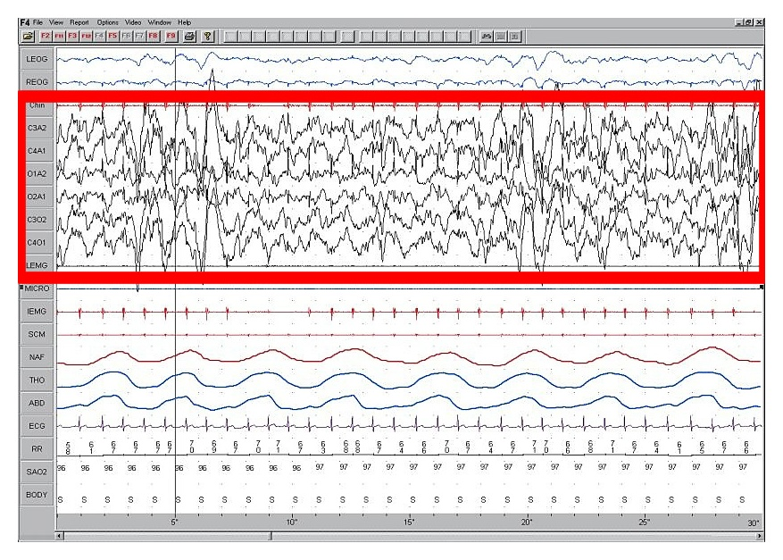

"Tại Sao Đồng Hồ Báo Tôi Chỉ Có 45 Phút Ngủ Sâu?"
Trong cộng đồng người dùng WHOOP, Oura Ring, Garmin, và Apple Watch, không có câu hỏi nào xuất hiện thường xuyên hơn: "Tôi đã ngủ được 7.5 tiếng, tại sao ứng dụng lại báo tôi chỉ có 45 đến 55 phút Giấc ngủ Sâu (Deep Sleep)?"
Trước khi lo lắng rằng giấc ngủ—hoặc chiếc đồng hồ của bạn—có vấn đề, hãy nắm vững 2 sự thật quan trọng từ y học giấc ngủ lâm sàng: 1. Giấc ngủ Sâu tự nhiên chỉ chiếm từ 13% đến 23% tổng thời gian ngủ của người trưởng thành khỏe mạnh (tương đương 55 đến 105 phút trong một đêm 8 tiếng). Không giống như Tổng thời gian ngủ, Ngủ Sâu không phải cứ càng nhiều là càng tốt; não bộ điều chỉnh thời lượng Ngủ Sâu dựa trên nhu cầu sửa chữa thể chất thực tế. 2. Giấc ngủ Sâu giảm dần một cách tự nhiên theo độ tuổi, và các cảm biến đeo cổ tay thường chấm điểm Giai đoạn N3 (Ngủ Sâu sóng chậm) khá khắt khe.

Định Mức Giấc Ngủ Sâu Bình Thường Theo Độ Tuổi Của Bạn Là Bao Nhiêu?
Trong nghiên cứu phân tích tổng hợp kinh điển đăng trên tạp chí JAMA (Journal of the American Medical Association) (Van Cauter et al., 2000), các nhà nội tiết học đã phân tích dữ liệu giấc ngủ qua đêm ở nhiều lứa tuổi trưởng thành. Họ phát hiện ra rằng Giấc ngủ Sâu sóng chậm (SWS) có mức sụt giảm theo tuổi tác rõ rệt nhất trong tất cả các giai đoạn ngủ, song hành với sự suy giảm tự nhiên của Hormone Tăng Trưởng (HGH) ban đêm:
| Nhóm Tuổi | Tỷ Lệ Ngủ Sâu Điển Hình (% Tổng Giờ Ngủ) | Thời Lượng Ngủ Sâu Trung Bình Mỗi Đêm | Bối Cảnh Sinh Lý & Lưu Ý Trên Thiết Bị Đeo |
|---|---|---|---|
| 18 – 25 Tuổi | 18% – 25% | 80 – 115 phút | Biên độ sóng Delta đạt đỉnh và xung tiết HGH ban đêm mạnh mẽ nhất. |
| 26 – 39 Tuổi | 15% – 21% | 65 – 95 phút | Khả năng phục hồi thể chất cao; rất nhạy cảm với căng thẳng công việc, ăn tối muộn và bia rượu. |
| 40 – 54 Tuổi | 12% – 17% | 50 – 75 phút | Biên độ sóng Delta vùng trán giảm dần; việc làm mát thân nhiệt buổi tối trở nên cực kỳ quan trọng. |
| 55 – 65+ Tuổi | 8% – 14% | 35 – 60 phút | Tốc độ đào thải cortisol buổi tối chậm hơn và biên độ sóng Delta nhẹ hơn (đặc biệt ở nam giới). |
Cách So Sánh Số Liệu Trên Thiết Bị Đeo: Vì đồng hồ thông minh suy luận Giấc ngủ Sâu từ độ bất động tuyệt đối của cổ tay + nhịp tim thấp nhất + nhịp thở đều thay vì gắn điện cực trực tiếp lên da đầu, một thương hiệu (như Garmin hoặc Apple Watch) có thể báo cáo 50 phút trong khi thiết bị khác (như Oura hoặc WHOOP) báo cáo 80 phút trong cùng một đêm. Hãy luôn so sánh thời lượng Ngủ Sâu với mức nền trung bình 30 ngày của chính bạn trên cùng một thiết bị, thay vì so sánh số phút tuyệt đối với đồng hồ của người khác.
2 "Công Tắc Sinh Học" Điều Khiển Giấc Ngủ Sâu
Để tăng thời lượng và độ sâu của Giấc ngủ Sâu, bạn cần phối hợp thuận chiều với 2 cơ chế sinh học tạo ra sóng não Delta:
1. Áp Lực Ngủ Nội Môi (Chiếc Đồng Hồ Cát Adenosine)
Từ khoảnh khắc bạn thức dậy vào buổi sáng, mỗi giờ não bộ hoạt động tỉnh táo và tiêu thụ năng lượng đều sản sinh ra một chất dẫn truyền thần kinh gọi là Adenosine. Adenosine liên tục gắn vào các thụ thể ở vùng não trước, tích lũy "cơn đói giấc ngủ" (Tiến trình S - Process S). Áp lực Adenosine lành mạnh vào cuối ngày càng cao—được xây dựng nhờ thức dậy đúng giờ và vận động thể chất ban ngày—thì Giấc ngủ Sâu sóng chậm đầu đêm của bạn càng mạnh mẽ.
2. Sự Sụt Giảm Thân Nhiệt Lõi (Điều Hòa Thân Nhiệt)
Đồng hồ sinh học trung tâm của não bộ (nhân trên giao thoa thị giác - SCN) đòi hỏi thân nhiệt lõi bên trong cơ thể phải giảm xuống khoảng 1.0°C (1.8°F) để khởi phát và duy trì Giấc ngủ Sâu. Nếu phần lõi cơ thể vẫn nóng—do phòng ngủ bí bách, chăn quá dày, tiêu hóa bữa ăn khuya hoặc tập nặng sát giờ ngủ—não bộ sẽ rất khó duy trì Giai đoạn N3.
4 Thói Quen Thầm Lặng Đánh Cắp Giấc Ngủ Sâu Của Bạn
Khi người dùng WHOOP và Oura ghi nhật ký thói quen hàng ngày trên ứng dụng, 4 "thủ phạm" dưới đây luôn đứng sau những đêm Giấc ngủ Sâu sụt giảm đột ngột:
- Cà Phê Buổi Chiều & Caffeine Trước Buổi Tập (Pre-Workout): Caffeine hoạt động bằng cách chiếm chỗ trực tiếp trên thụ thể Adenosine của não, đánh lừa cảm giác tỉnh táo nhưng không hề làm mất đi lượng Adenosine tồn đọng. Caffeine có thời gian bán hủy trung bình từ 5 đến 6 giờ (và thời gian phần tư hủy lên tới 10–12 giờ). Trong thử nghiệm lâm sàng có đối chứng đăng trên Journal of Clinical Sleep Medicine (Drake et al., 2013), việc nạp 400 mg caffeine ngay cả khi cách giờ đi ngủ 6 tiếng vẫn làm giảm hơn 1 giờ tổng thời gian ngủ và cắt giảm mạnh độ sâu của sóng chậm Delta—ngay cả khi người tham gia cảm thấy mình vào giấc bình thường!
- Ăn Bữa Lớn Trong Vòng 3 Giờ Trước Khi Ngủ: Tiêu hóa một bữa tối giàu calo hoặc nhiều chất béo kích hoạt sinh nhiệt do thức ăn (diet-induced thermogenesis), làm tăng thân nhiệt lõi và giữ nhịp tim ở mức cao (
+5 đến +10 nhịp/phút) đúng vào khung giờ vàng 22:00 – 02:00, nơi 75% Giấc ngủ Sâu đáng lẽ phải diễn ra. - Tập Luyện Cường Độ Cao Quá Muộn: Dù tập cardio và kháng lực ban ngày là chất xúc tác tự nhiên tuyệt vời nhất cho Giấc ngủ Sâu, việc kết thúc buổi tập HIIT vắt kiệt sức trong vòng 2 giờ trước khi ngủ sẽ khiến adrenaline giao cảm và thân nhiệt lõi neo ở mức cao khi bạn đặt lưng xuống giường.
- Ngủ Trưa Quá Dài Và Quá Muộn (>30 Phút Sau 15:00 Chiều): Một giấc ngủ trưa dài vào cuối buổi chiều giống như mở van xả nồi áp suất Adenosine—làm vơi đi áp lực ngủ cần thiết để tạo sóng Delta vào lúc 23:00 đêm.
5 Phương Pháp Khoa Học Giúp Tăng Giấc Ngủ Sâu Ngay Tối Nay
- Ứng Dụng "Hiệu Ứng Tắm Nước Ấm" 60–90 Phút Trước Khi Ngủ: Trong phân tích gộp từ 5.322 nghiên cứu y sinh đăng trên Sleep Medicine Reviews (Haghayegh et al., 2019), các nhà khoa học tại Đại học Texas phát hiện ra rằng tắm vòi sen hoặc ngâm bồn nước ấm (40°C–42.5°C) trong 10–15 phút, cách giờ đi ngủ từ 1 đến 2 tiếng giúp tăng đáng kể Giấc ngủ Sâu sóng chậm và rút ngắn 36% thời gian vào giấc. Tại sao? Nước ấm làm giãn mạch máu ngoại vi ở bàn tay và bàn chân (giãn mạch - vasodilation), giúp cơ thể thoát nhiệt từ phần lõi ra ngoài cực nhanh ngay khi bạn bước ra khỏi phòng tắm!
- Thiết Lập "Giờ Giới Nghiêm Caffeine" 8–10 Tiếng Trước Khi Ngủ: Nếu bạn đi ngủ lúc 22:30, hãy thưởng thức ly cà phê hoặc trà đậm cuối cùng trước 13:30 chiều.
- Hạ Nhiệt Độ Phòng Ngủ Xuống 18.3°C – 20°C: Kết hợp điều hòa mát với chăn ga chất liệu thoáng khí (cotton tự nhiên, sợi tre hoặc Tencel) để nhiệt lượng tích tụ không đẩy bạn bật khỏi Giai đoạn N3.
- Xây Dựng Tải Vận Động Thể Chất Sớm Trong Ngày: Dành ít nhất 30–45 phút tập cardio Zone 2 hoặc tập tạ vào buổi sáng hoặc chiều để tích lũy áp lực Adenosine tự nhiên.
- Bảo Vệ Tuyệt Đối 3 Giờ Đầu Tiên Của Đêm: Vì Giấc ngủ Sâu diễn ra áp đảo ở Chu kỳ 1 và 2, việc đi ngủ đúng giờ trong một căn phòng tối, yên tĩnh và dạ dày nhẹ nhàng chính là đòn bẩy mạnh nhất bạn có thể thực hiện.
Tài Liệu Tham Khảo & Nguồn Y Khoa
- Van Cauter, E., Leproult, R., & Plat, L. (2000). Age-related changes in slow wave sleep and REM sleep and relationship with growth hormone and cortisol levels in healthy men. JAMA, 284(7), 861–868. https://pubmed.ncbi.nlm.nih.gov/10938176/
- Haghayegh, S., Khoshnevis, S., Smolensky, M. H., Diller, K. R., & Castriotta, R. J. (2019). Before-bedtime passive body heating by warm shower or bath to improve sleep: A systematic review and meta-analysis. Sleep Medicine Reviews, 46, 124–135. https://pubmed.ncbi.nlm.nih.gov/31102877/
- Drake, C., Roehrs, T., Shambroom, J., & Roth, T. (2013). Caffeine effects on sleep taken 0, 3, or 6 hours before going to bed. Journal of Clinical Sleep Medicine, 9(11), 1195–1200. https://pubmed.ncbi.nlm.nih.gov/24235903/
- WHOOP The Locker. Deep Sleep: What It Is, Why You Need It & How to Get More. https://www.whoop.com/us/en/thelocker/what-is-deep-sleep/